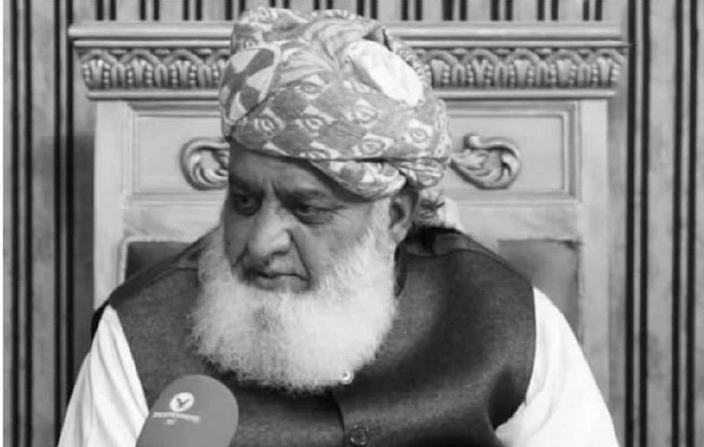

پاکستان میں منڈلاتے سنگین خطرات۰۰۰ مولانا فضل الرحمٰن کی لاہور رہائش گاہ پر نظر بندی؟

پاکستان میں پہلے ہی سابق وزیر اعظم و عالمی سطح پر کرکٹ کے مایہ ناز سابق کپتان عمران خان کی گذشتہ کئی برسوں سے قید تنہائی بین الاقوامی سطح پر شہباز شریف حکومت کی ظلم و بربریت کو نمایاں کرتی ہے تو اب انہی کی حکومت کے حلیف اور پاکستانی عوام میں مقبول مذہبی و سیاسی قائد مولانا فضل الرحمٰن جو جمعیت علمائے اسلام (ف) کے سربراہ ہیں انہیں بھی لاہور کی رہائش گاہ میں نظر بند کئے جانے کی اطلاعات نے پاکستان ہی نہیں بلکہ عالمی سطح پر شہباز شریف حکومت کی ناکامی و نااہلی یا پھر غرور و تکبر کو ظاہر کرتی ہے کیونکہ کسی بھی حکومت کی کامیابی کی میعاد اُسی وقت پایہ تکمیل کو پہنچتی ہے جب انکی حلیف جماعتوں کے ساتھ روابط پاک وصاف اور شفاف اور دوستانہ رہیں یہی نہیں بلکہ اپوزیشن کے ساتھ بھی حکومت کے تعلقات بہتر رہنے چاہیے جبکہ پاکستان جیسے اسلامی جمہوریہ کہلائے جانے والے ملک میں ایسا محسوس ہوتا ہیکہ حکومت کی باگ ڈور فوج کے ہاتھ میں ہے اور فوجی سربراہ جو چاہے، جیسا چاہے ایسا حکومتِ پاکستان کے وزیر اعظم کو کرنا پڑتا ہے ورنہ اسے سابق وزراء اعظم کی طرح اپنے انجام کو مدِ نظر رکھنا پڑتا ہے۰۰۰
ہاں وزیر اعظم شہباز شریف اور فوجی سربراہ عاصم منیر نے عمران خان پر جس قدر ظلم و زیادتی کرنی تھی کرڈالی اور آج بھی یہ سلسلہ جاری ہے۰۰۰ اب ایسا محسوس ہوتا ہیکہ حلیف جماعتوں کے رہنماؤں کی باری ہے اور اسی کی ایک کڑی مولانا فضل الرحمٰن نظر آتے ہیں۰۰۰
پاکستان میں ایک طرف حکومت کی کارکردگی اور ملک کے حالات پر نظر رکھتے ہوئے سب سے بڑی اپوزیشن پاکستان تحریک انصاف کی ذمہ داری تھی لیکن پاکستانی شہباز شریف حکومت نے اسکی اعلیٰ ترین قیادت کو مختلف الزامات کے تحت قید و بند کی صعوبتیں برداشت کرنے پر مجبور کردیا ہے۔ ایسا محسوس ہوتا ہیکہ عمران خان اپنی پوری زندگی قید تنہائی میں گزار دیں گے یا پھر انہیں کسی نہ کسی طریقہ سے قید میں ہی ہلاک کردیا جائے گا۰۰۰
صرف عمران خان ہی نہیں بلکہ انکی شریک حیات بشریٰ بی بی اور دیگر اہم ترین رہنماء بھی آج پاکستانی جیلوں میں زندگی گزار رہے ہیں اور نہیں معلوم انہیں کب تک قید و بند کی صعوبتیں برداشت کرنی پڑیں گی۰۰۰ اب باری ہے شہباز شریف حکومت کی حلیف جماعتوں کے قائدین کی۰۰۰ حکومت کی حلیف جماعتوں کے قائدین کو شہباز شریف حکومت سے ڈر و خوف لگنے لگا ہے کہ کہیں انکا بھی انجام اپوزیشن رہنماؤں کی طرح نہ ہوجائے۰۰۰
اگر واقعی مولانا فضل الرحمٰن کی انکی لاہور رہائش گاہ میں نظر بندی ہوئی ہے اور انہیں جس پروگرام میں حصہ لینا تھا اس سے روکا گیا ہے تو اس سے صاف ظاہر ہوتا ہے کہ حکومت پاکستان انکی حلیف جماعت کے رہنماؤں سے ڈری ہوئی ہے اور شہباز شریف یا پھر عاصم منیر نہیں چاہتے کہ حکومت کی نااہلی اور عوام کے ساتھ انکی دھوکہ دہی کو ظاہر کریں۔
بی بی سی اور دیگر ذرائع ابلاغ کے مطابق جمعیت علمائے اسلام (ف) کا دعویٰ ہے کہ پولیس کی بھاری نفری اِس وقت مولانا فضل الرحمٰن کی لاہور میں واقع رہائش گاہ کے باہر موجود ہے اور کسی شخص کو اِس گھر سے باہر نکلنے یا داخل ہونے کی اجازت نہیں دی جارہی ہے۔ لاہور پولیس نے تاحال اس معاملے پر کوئی باضابطہ وضاحت جاری نہیں کی ہے۔
بی بی سی اُردو کی جانب سے بتایا گیا ہیکہ ڈی آئی جی آپریشنز لاہور سے رابطہ کرنے کی کوشش کی گئی اور اُن کو تحریری سوالات بھی بھیجے گئے، تاہم اُن کی جانب سے تاحال کوئی جواب موصول نہیں ہوا۔
جمعیت علمائے اسلام (ف) کے رہنما سینیٹر کامران مرتضیٰ نے بی بی سی اردو کے عمیر محمود کو بتایا کہ مولانا فضل الرحمٰن کو 24؍ نومبر منگل کی صبح 11 بجے لاہور ہائیکورٹ بار ایسوسی ایشن کے زیرِ اہتمام آل پارٹیز کنونشن سے خطاب کرنا تھا، اور اسی سلسلے میں مولانا فضل الرحمٰن لاہور کے علاقے ٹھوکر نیاز بیگ (پارک ویو سٹی) میں واقع اپنے گھر میں موجود تھے جہاں سے انھیں اس تقریب میں شرکت کیلئے روانہ ہونا تھا۔
کامران مرتضیٰ کے مطابق پنجاب حکومت نے فضل الرحمٰن کو کانفرنس میں شرکت سے روکنے کیلئے ’جان بوجھ کر نظر بند کرلیا ہے۔‘ ان کے مطابق جے یو آئی ف نے اس غیر قانونی اقدام کے خلاف لاہور ہائیکورٹ میں جس بیجا کی پٹیشن بھی دائر کی اور اس پر فی الفور سماعت کی درخواست کی مگر اسے درخواست کو بھی ’بغیر کسی معقول وجہ کے کل تک کیلئے مؤخر کردیا گیا ہے۔‘ لاہور ہائیکورٹ میں دائر کردہ حبس بیجا کی پٹیشن میں جے یو آئی ف نے مؤقف اختیار کیا ہے کہ پارٹی کے متعلقہ افراد جب مولانا فضل الرحمٰن کی لاہور ہائیکورٹ بار ایسوسی ایشن میں کی جانے والی تقریر کے قانونی پہلوؤں پر مشاورت کیلئے اُن کے گھر منگل کی صبح نو بجے پہنچے تو وہاں گھر کے اطراف میں سینکڑوں پولیس اہلکار اور جیل کی گاڑیاں موجود تھیں۔
پٹیشن میں مؤقف اختیار کیا گیا ہے کہ جب لیگل ٹیم نے وہاں موجود پولیس افسران سے مولانا فضل الرحمٰن کی حراست کیلئے کسی مجاز اتھارٹی کا کوئی قانونی دستاویز یا حکم نامہ دکھانے کا مطالبہ کیا اور اندر جانے کی اجازت مانگی تو ملاقات کی اجازت نہیں دی گئی اور نہ ہی کوئی قانونی دستاویز دکھائی گئی۔ درخواست میں الزام عائد کیا گیا ہے کہ جمعیت علمائے اسلام ف کے سربراہ کو حبس بیجا میں رکھا گیا ہے جس کے خلاف فوری طور پر قانونی اقدام کیا جائے۔
اگر واقعی مولانا فضل الرحمٰن کو نظر بند کیا گیا ہے تو اسکے نتائج سنگین صورتحال اختیار کرسکتے ہیں کیونکہ جمعیت علمائے اسلام (ف) کے رہنما فضل الرحمٰن کی گرفتاری سے حالات بہت زیادہ خراب ہوسکتے ہیں لیکن ماضی میں دیکھا گیا ہیکہ کس طرح پاکستان تحریک انصاف اور پھر پاکستان تحریک لبیک پاکستان کے قائدین اور کارکنوں کو کس طرح گرفتار کرکے انکے خلاف کس طرح سخت کارروائی کی گئی۰۰۰
اگر مولانا فضل الرحمٰن کے خلاف ایسا ہی کچھ کیا گیا تو پاکستان پیپلز پارٹی قیادت بھی اپنے انجام کیلئے تیار ہوجائے گی اور اس سے بچے رہنے کے لئے عملی اقدامات کا آغاز کرے گی۰۰۰
بین الاقوامی سطح پر شہباز شریف اور عاصم منیر کی شبیہہ متاثر ضرور ہوگی کیونکہ گذشتہ کئی برسوں کے دوران پاکستانی معیشت جس کا جو بُرا حال ہوا ہے اور ملک میں عوامی آزادی کو جس طرح کچل دیا گیا ہے اسکا مشاہدہ عالمی سطح پر کیا گیا ہے اور مستقبل میں بھی اس پر نظر ہے۰۰۰
ایک طرف پاکستانی فوجی سربراہ عاصم منیر امریکہ اور ایران کے درمیان ثالثی کے لئے پیش ہورہے ہیں تو دوسری جانب انکے اپنے ملک میں حالات کشیدگی کی جانب بڑھتے دکھائی دے رہے ہیں یہی نہیں بلکہ پڑوسی ممالک کے ساتھ بھی پاکستان کے تعلقات خراب ہی ہوتے جارہے ہیں۰۰۰
شیخ حسینہ واجد کی دہلی سے بنگلہ دیش واپس ہونے کی تیاری
بنگلہ دیش میں پھر ایک مرتبہ ماحول بدلتا محسوس ہورہا ہے۰۰۰ شیخ حسینہ واجد ہندوستان سے جلاوطن زندگی گزارنے کے بعد 16؍ ڈسمبر کو اگر ملک واپس ہوتی ہیں تو انکا استقبال کس طرح ہوگا۰۰۰ حکومت انہیں گرفتار کرنے کی سعی میں مصروف ہے تو دوسری جانب انکی پارٹی کی جانب سے ایک بڑے احتجاج کا اندیشہ ہے اور اگر ایسا ہوتا ہے تو بنگلہ دیش کے حالات پر قابو پانا مشکل ہوجائے گا۔
ذرائع ابلاغ کے مطابق سابق وزیر اعظم شیخ حسینہ واجد نے 16؍ ڈسمبر کو اپنے وطن بنگلہ دیش واپس ہونے کا ارادہ ظاہر کیا ہے۔ وہ اگسٹ 2024 میں اقتدار چھوڑ کر ملک سے فرار ہوئیں اور ہندوستان کے دارالحکومت دہلی میں جلاوطنی کی زندگی گزار رہی ہیں۔ ان کے ترجمان کے مطابق شیخ حسینہ نے بنگلہ دیشی حکومت سے انھیں ڈھاکہ واپس لانے کیلئے پرواز کا انتظام کرنے کو کہا ہے۔
بتایا جاتا ہیکہ یہ اعلان ایسے وقت میں سامنے آیا ہے جب بنگلہ دیش میں ایک بار پھر بدامنی جاری ہے اور شیخ حسینہ کی جماعت عوامی لیگ کے حامیوں نے اس کی سرگرمیوں پر پابندی کے باوجود مظاہرے کیے ہیں۔ تاہم ابھی ان کی واپسی کا طریقہ کار واضح نہیں ہوا ہے۔ گذشتہ سال بنگلہ دیش کی ایک عدالت نے طلبہ کے احتجاج کے دوران مہلک کریک ڈاؤن سے متعلق انسانیت کے خلاف جرائم کے الزام میں شیخ حسینہ واجد کو غیر حاضری میں سزائے موت سنائی گئی تھی۔
وہ ان الزامات کی تردید کرتی رہی ہیں۔ بنگلہ دیش کے وزیرِ مملکت برائے خارجہ امور ہمایوں کبیر نے کہا ہے کہ شیخ حسینہ عام مسافر کی حیثیت سے وطن واپس نہیں آسکیں گی بلکہ انھیں ’ہتھکڑیوں میں واپس لایا جائے گا‘۔
انھوں نے شیخ حسینہ اور دہلی پر بنگلہ دیش میں حالیہ بدامنی کو ہوا دینے اور ’دہشت گردانہ سرگرمیوں‘ کی حمایت کا الزام بھی عائد کیا۔ ہندوستان کی وزارتِ خارجہ نے اس الزام پر تبصرے کی درخواست کا فوری جواب نہیں دیا۔ وزارت نے اپریل میں کہا تھا کہ وہ شیخ حسینہ کی حوالگی سے متعلق بنگلہ دیش کی درخواست کا جائزہ لے رہی ہے اور نئی حکومت کے ساتھ تعمیری رابطے اور دوطرفہ تعلقات مضبوط بنانے کی خواہش رکھتی ہے۔
شیخ حسینہ واجد کی بنگلہ دیش واپسی سے قبل ملک کے حالات اگر قابو میں رہتے ہیں تو موجودہ حکومت کے لئے بہتر ہوگا ورنہ ملک میں بدامنی اور حسینہ واجد کی پارٹی کے کارکنوں کا احتجاج ملک میں پھر ایک مرتبہ سنگین نوعیت اختیار کرسکتا ہے۔
حکومت جس طرح شیخ حسینہ کو واپس لانا چاہتی ہے اگر وہ اس میں کامیاب ہوجاتی ہے اور انکی پارٹی کے کارکنوں پر قابو پالیتی ہے تو پھر یہ شیخ حسینہ کیلئے مشکل ہوجائے گا کہ وہ اپنے ملک میں آزادانہ اور پُرفضا ماحول میں زندگی گزار سکیں۰۰۰ اب دیکھنا ہیکہ واقعی 16؍ ڈسمبر کو شیخ حسینہ واپس اپنے ملک آزادانہ طور پر عام شہری کی حیثیت سے پہنچیں گی یا پھر انہیں گرفتار دینا ہوگی۰۰۰
ایرانی ریال کی قیمت پہلی مرتبہ 2 لاکھ 80 ہزار تومان
ایران میں جنگی حالات کی وجہ سے اسکی معیشت بُری طرح متاثر ہورہی ہے اور ایرانی ریال کی قیمت میں مسلسل کمی واقع ہوتی جارہی ہے۔ ذرائع ابلاغ کے مطابق ایران کی فری مارکیٹ (آزاد منڈی) میں امریکی ڈالر کی قیمت نے 24؍ نومبر منگل کو ایک اور تاریخی ریکارڈ قائم کرلیا ہے اور ایران کی تاریخ میں پہلی بار ایک ڈالر 2 لاکھ 80 ہزار تومان کی حد عبور کرگیا ہے۔
گذشتہ تین ماہ کے دوران ایرانی ریال کی قدر میں مسلسل کمی دیکھی گئی ہے، جس کی بڑی وجہ تہران اور واشنگٹن کے درمیان بڑھتی ہوئی کشیدگی اور ایران پر امریکہ کے مسلسل اقتصادی دباؤ کو قرار دیا جارہا ہے۔ ستمبر 2026 میں پہلی بار ڈالر کی قیمت 2 لاکھ تومان سے تجاوز کرگئی تھی، جس کے بعد اسی ماہ اس میں مزید اضافہ ہوا اور یہ 2 لاکھ 37 ہزار تومان کی بلند ترین سطح تک پہنچ گئی۔
اکتوبر 2026 میں ڈالر نے ایک اور ریکارڈ قائم کرتے ہوئے 2 لاکھ 72 ہزار تومان کی سطح کو چھولیا تھا۔ اور 24؍ نومبر کو پہلی مرتبہ امریکی ڈالر کی قیمت 2 لاکھ 80 ہزار تومان ہوگئی، جو ایرانی کرنسی کی مسلسل گرتی ہوئی قدر کی عکاسی کرتی ہے۔ دوسری جانب امریکی وزیرِ خزانہ، جو ایران کے خلاف ’اقتصادی تنہائی‘ کی پالیسی پر عمل پیرا ہیں، نے ایرانی معیشت کو ’ڈوبتی ہوئی معیشت‘ قرار دیا ہے۔
ایران کی معیشت اتنی بُری حالت میں ہونے کے باوجود ابھی بھی ایران مشرقِ وسطیٰ میں موجود امریکی تنصیبات اور دیگر مقامات پر حملے کررہا ہے۔ مستقبل قریب میں اگر ایران اور امریکہ کے درمیان حالات مزید بگڑتے ہیں تو ایران کی ریال کی قیمت مزید کم ہوجائے گی، جس کی وجہ سے ملک میں افراتفری کا ماحول بن سکتا ہے۔